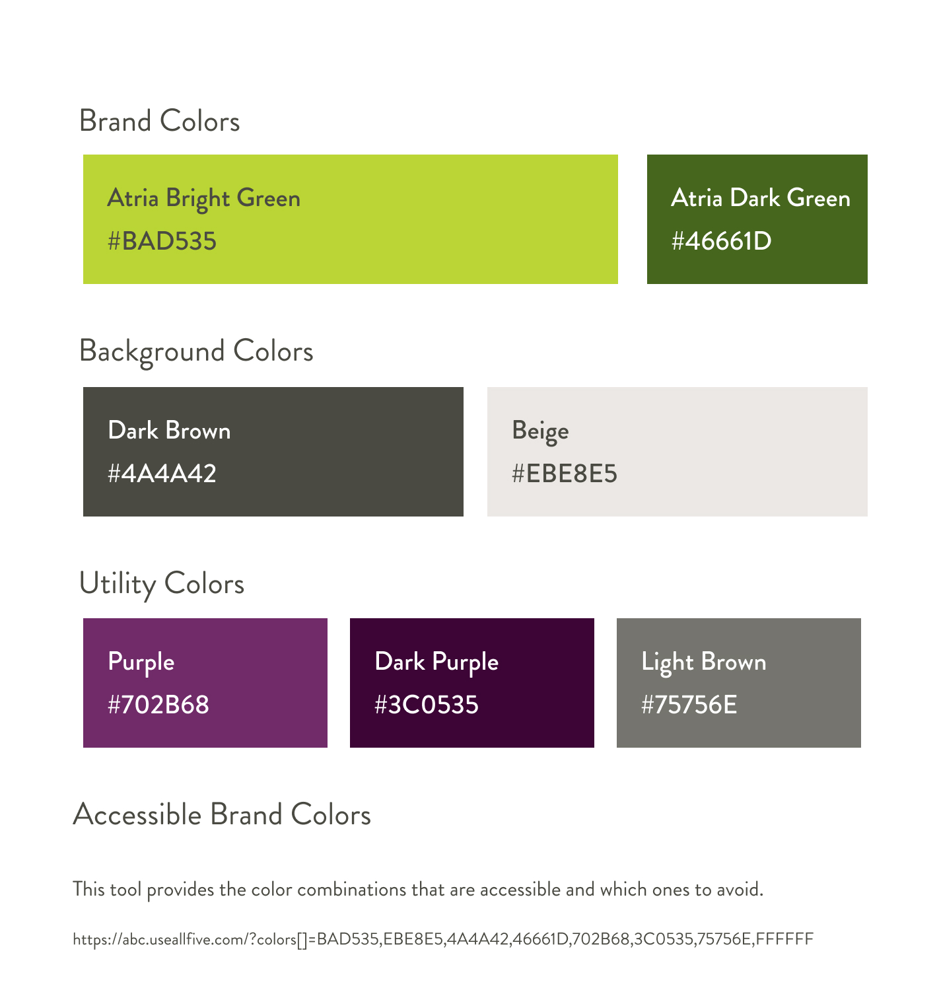
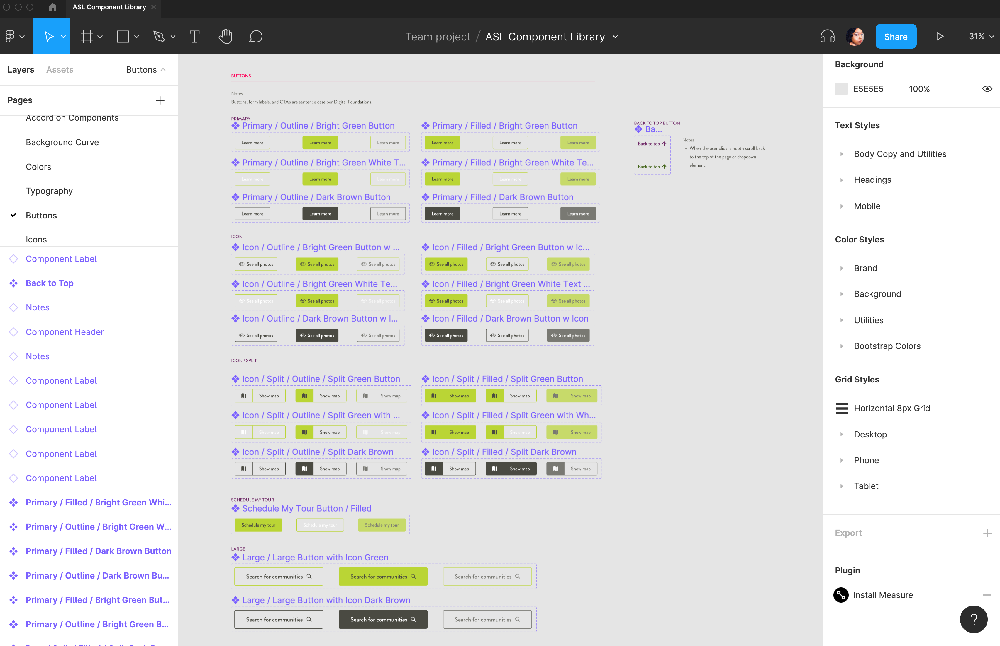
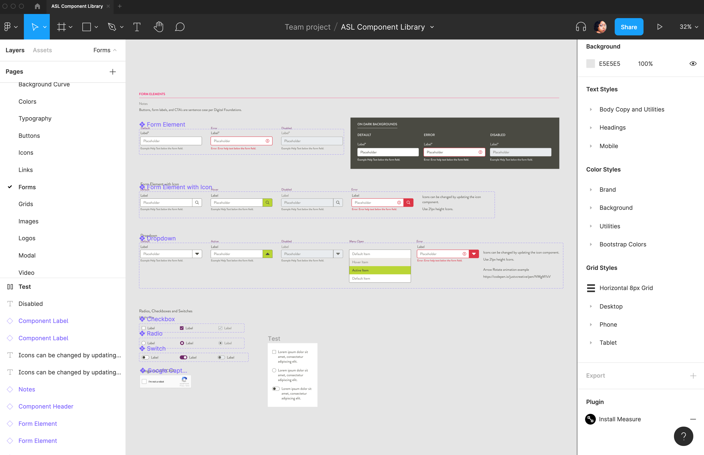
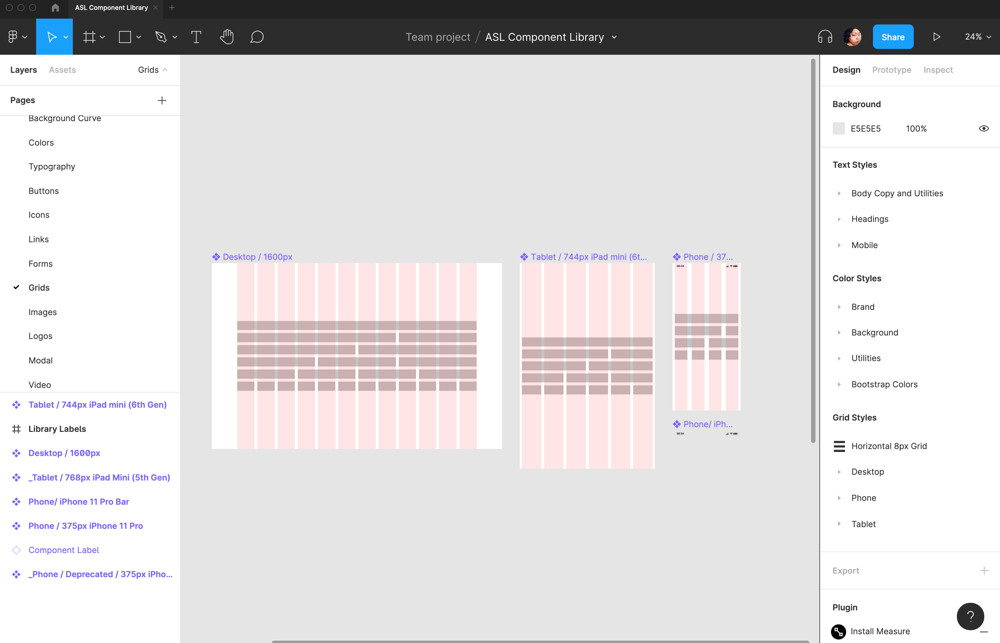
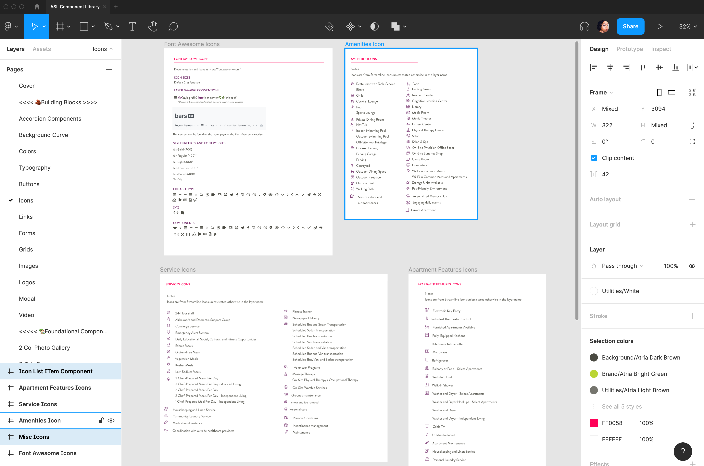
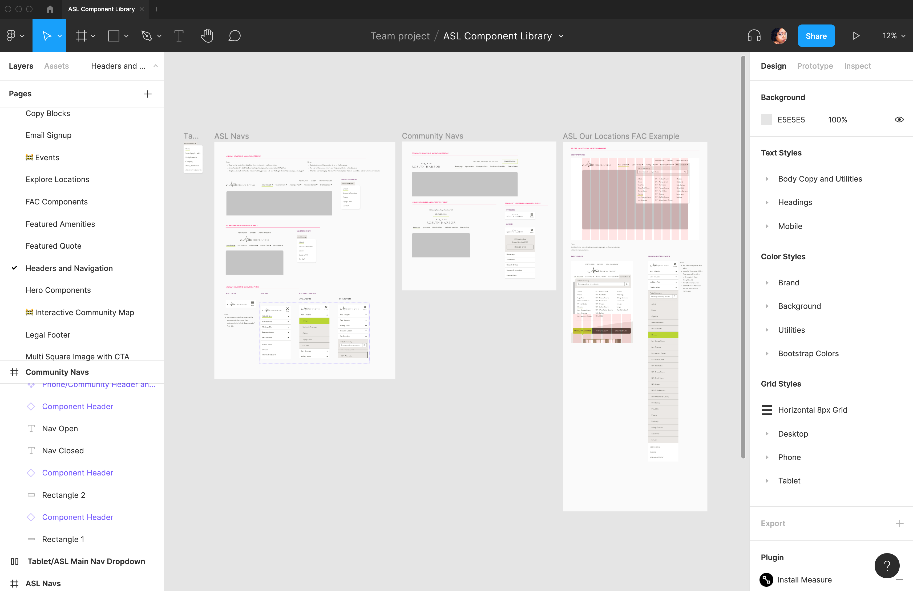
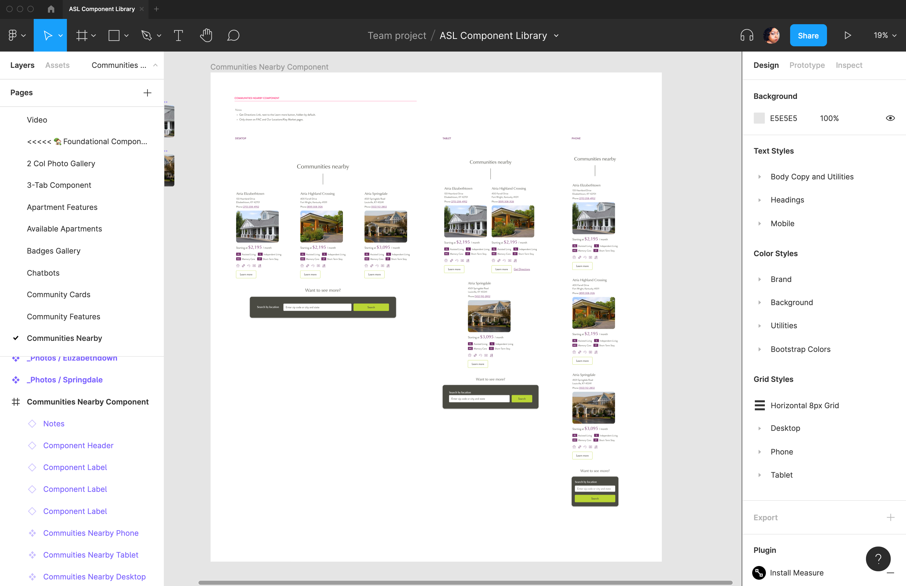
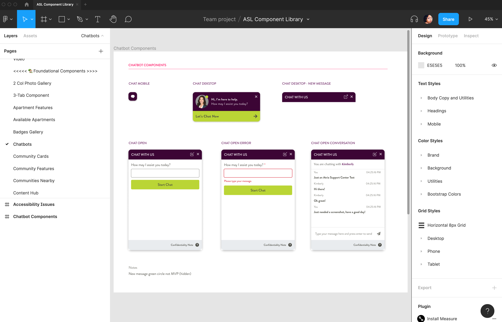
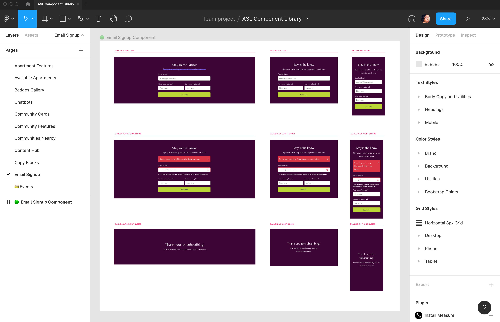
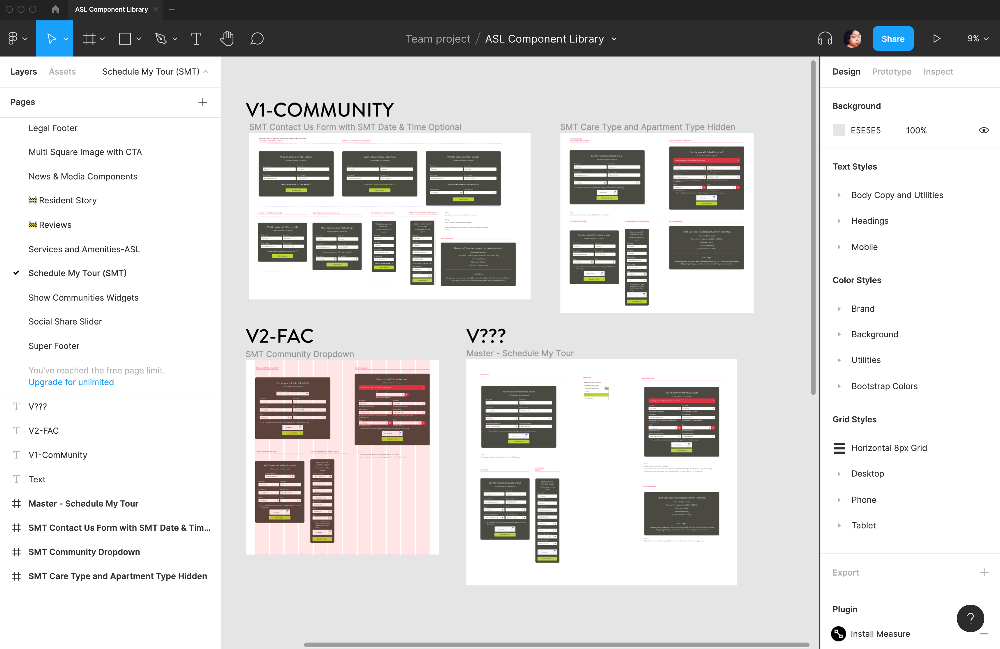

Product Design
Multi-Brand Design System for Senior Living
Project Scope
Team
Digital Marketing Technology Stack
Role
Lead UX/UI Designer
Deliverables
- Design system with a component library
- New Atria Senior Living website built with the design system with desktop, tablet and phone views
Goals
- Create a design system with a component library that sets the standards for user interface design at Atria Senior Living
- Have the ability to use the design system across all Atria's brands and be able to tailor the components to fit the individual brand's style
- Use the design system to create Desktop, tablet, and phone layouts and prototypes
Tools
Figma
Problem Statement
Atria Senior Living needed a new website to bring their brand current in the senior living space. The previous site was difficult to maintain, did not have consistent design templates, and was challenging to navigate. It also had many accessibility issues from the design down to functionality.
Atria's Digital Marketing and Product Innovation department organized the Digital Marketing Technology Stack (DMTS) team to build the website with the latest version of WordPress with Nuxt.JS and Bootstrap 4. One of the requirements was to build the site using a component system to make changes on a component level in WordPress.
Before being part of the team, an outsourced designer created the initial designs for the website in Sketch. Those designs were a step in the right direction but needed improvements.
- The designs did not align with the Bootstrap grid.
- The previous designer did not create tablet views.
- Brand colors, typography, and button styles were not consistent across all design files.
- The designs were not accessible from a UI design perspective.
- No icon library
- The designs did not cover all pages in the project requirements.
- The designs did not include any animation, interactive prototypes, examples, or documentation that allowed the developers to understand to implement the designs.
My role was to take the initial designs from Sketch and use those files to create the design system and deliver the missing pieces of the puzzle
Strategy and Architecture
We took the original sketch files and imported them into Figma. I worked with the product owner to audit the designs and delivered a spreadsheet of all components in the current designs. After multiple meetings with the product owner and the VP of our department, we created a sitemap, component list, and required pages. Data from Google Analytics, HotJar, SEO, and other tools were the driving force behind the content strategy of the new website.
This project is also the first web project where design and development happened simultaneously. The team collaborated on the data structure and architecture of the components from a development perspective. This process allowed the developers to begin working on the back-end while working on the designs. I included feedback from the team to make sure they were in the loop in any updates from a design perspective.
Brand
he project's design phase began with creating the Component Library in Figma. I started by creating pages in Figma that contained the brand colors and typography and created styles in Figma.
For typography, I made sure this portion of the system was accessible, setting typography guidelines based on accessible UI design best practices. These guidelines included minimal type size, heading styling, mobile typography, and documentation on installing the fonts via the Adobe Typekit CDN.
For colors, I incorporated the hex values for colors and documented the accessible use of color. I used a tool called Accessible Brand Colors to create a guideline for color usage on the site. The tools compare the colors on a chart and tell you whether specific colors meet AA, AAA, or do not use. This way, I did not have to check all the colors throughout the design process because I had a handy cheat sheet to ensure accessible color usage.
Finally, for logos, I created one component for the Atria Senior Living Logo and a component for the Roslyn Harbor Community as an example for treatment for community logos. Since Atria has multiple brands that are going to be using this design system, I needed to provide guidelines for each brand logo so that the Creative Team that manages the brand from the print side could create the assets needed for the communities.
Typography

Colors
Logo
Building Blocks
After establishing colors and typography, it was time to start creating components. I sectioned the component library into two sections. Building Blocks are micro-components used across all components. For example, you need form fields, dropdowns, and other input types to create a form.
- Grid styles for desktop, tablet, and phone views
- Buttons
- Form and input types
- Icons library
- Image and video placeholders
- Modals
- Links
- Accordions
The building blocks were also interactive with all the states. You could hover over all the buttons and see the animation and have an understanding of how the user would interact with a component.
Buttons
Forms
Responsive Grids
Icon Library
Foundational Components
After creating the Building Blocks, the next step was to develop the Foundational Components. These components are the full features of a website and include layouts for desktop, tablet, phone views, and in some instances, different states.
For example, the Email Sign-Up Form is one component with all three responsive layouts, error states with examples of messaging and UX guidelines, and success states.
This approach allows a developer to understand all aspects of the user's journey in each component and set expectations for development. Some components were more complex in functionality, so in those cases, I always included a link to an example or additional documentation of how the component works.
Below are some of the critical, revenue-driving components created. If I had to go back and count, the component library had probably over 100 components. Atria hired Via Studios to help create about half of the components to expedite the process. I reviewed them to ensure they met the project requirements, were accessible, and were on-brand.
Responsive Navs
Communities Nearby
Combo Widget

Chatbot
Email Signup Form
Schedule My Tour
Assembling the pages
Once we completed the component design, it was time to create the website's pages. Again, using this system streamlined the page design process. I set up three different Figma files for the desktop, tablet, and phone layouts for all the brand pages and a separate file for the Find a Community experience. I created individual design files for the different layouts for the brand pages to make it easier to ensure that components from different views didn't mix and it is easier to create the prototypes in Figma.
Along the way, I would go back and make minor updates to components once I applied copy and images in the designs. For example, the components had margin and padding built. In addition, I adjusted the spacing and alignment in each view and added documentation for the developers on the spacing of components.
The most significant challenge was implementing the copy on the page. The copywriter was on a different team with a different process than our team. That copywriter would create copy for the page without reviewing the designs or component library. As a result, there were instances where the content did not align with the components and digital copy best practices. After providing additional feedback, suggestions, and some revision, we aligned the content with the components. Some components were also tweaked where it made sense based on the direction of the content.
Final Thoughts
This project took about a year to complete as it was a comprehensive overhaul of the Atria Senior Living website. Some new features in Figma, such as Interactive Components and Prototype Flows, made it easier to create prototypes.
When Atria acquired Holiday Senior Living, it made Atria Senior Living the second largest senior living provider in the US. Their website also needed an overhaul. The component library was already complete by that time, and we were about 80% completed on brand pages. We hired an outsourced designer and duplicated the Atria component library, and moved it to the Holiday project in Figma. We used the new brand standards for Holiday to swap the ASL colors, logos, and typography which instantly transformed the component library to fit the Holiday brand. The smooth transition made it very easy to get the outsourced designer running to rapidly create the design system for Holiday and add some custom components tailored to that brand.
We recently launched the Atria Senior Living site. Next steps are to monitor the performance of the site, audit and fix any bugs, and optimize the components to improve the user experience.
We are also using this design system to launch Holiday Senior Living and Coterie Luxury Senior Living in 2022.